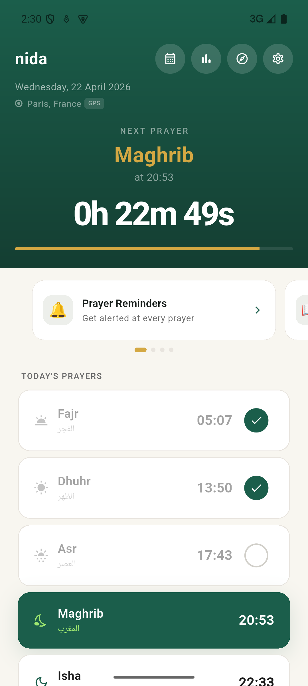
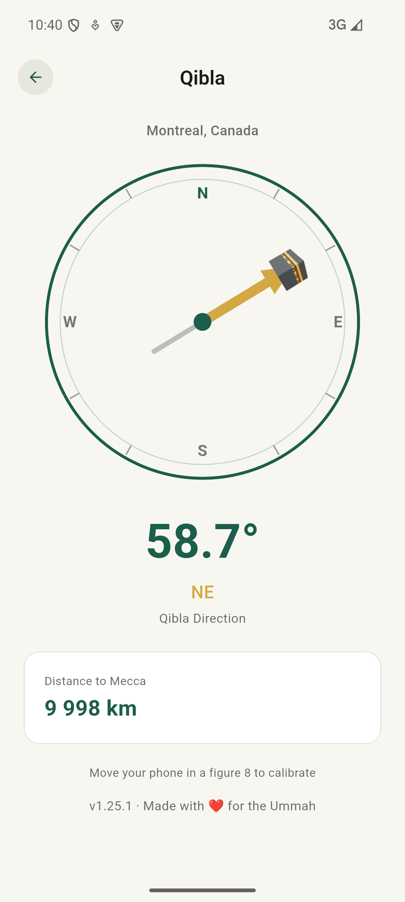
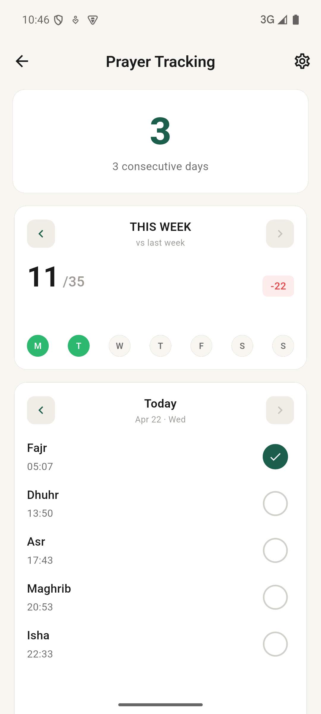

Accurate times for every prayer, wherever you are. Fully offline. No account. No tracking. Just the call to prayer.
Get it onGoogle Play
nida uses the most rigorous astronomical calculations, auto-detects the right method for your region, and works fully offline. Whether you're home or travelling, the call to prayer finds you.
Accuracy
Prayer times calculated using proven astronomical models. Multiple scholarly methods supported. Auto-detected for your region. Asr adapts to your madhab.
Science meets fiqhPrivacy
No account, no server, no analytics. Your location and prayer history never leave your device. nida has zero data collection by design.
Zero data collectedTradition
Traditional vocal athan only — no music. Islamic compliance is reviewed for every feature. Scholarly disagreement becomes a user setting, never a hardcoded choice.
Fiqh-reviewedSimplicity
One purpose: never miss a prayer. No social features, no ads, no premium tier. nida does one thing and does it with precision.
One job, done rightPrecise prayer times for any city in the world
GPS auto-detection or manual city selection. Times calculated on-device using your chosen method. Supports Shafi'i and Hanafi Asr calculations. Manual timezone override available.
Athan notifications
Traditional muezzin recitation at every prayer time. Per-prayer on/off toggle.
Advance reminders
Set a reminder minutes before each prayer so you're never caught off guard.
Multiple muezzin voices
Choose from several traditional athan recitations. Beep or silent options also available.
Qibla compass
Real-time compass pointing to the Kaaba. Great-circle calculation — the scholarly consensus.
Distance to Mecca
Shows your exact distance from the Masjid al-Haram.
Prayer tracking
Mark each prayer as done. Track your consistency week over week. All data stays local.
NewFollow-up reminders
Missed a prayer? nida sends a gentle follow-up reminder after a configurable delay.
Weekly stats
See how many prayers you completed this week vs last week. Simple, motivating, private.
Prayer guide
Step-by-step illustrated guide to performing each prayer correctly. Obligatory, occasional, and night prayers.
Light, dark & system theme
Follows your system preference automatically, or set it manually.
Shurooq time
Sunrise time displayed — relevant for Fajr completion and voluntary prayers.
Home screen widget
See the next prayer directly from your home screen, without opening the app.
100% offline
All calculations happen on your device. No internet connection ever required. Works in airplane mode, in remote areas, anywhere.
Timezone control
Use your phone's timezone automatically, or override it manually when travelling across timezones.
Available in 7 languages
Interface fully localized including Arabic (RTL).
No clutter. No subscriptions. No notifications that aren't prayers. nida shows you what matters and nothing else.
Get it onGoogle Play
